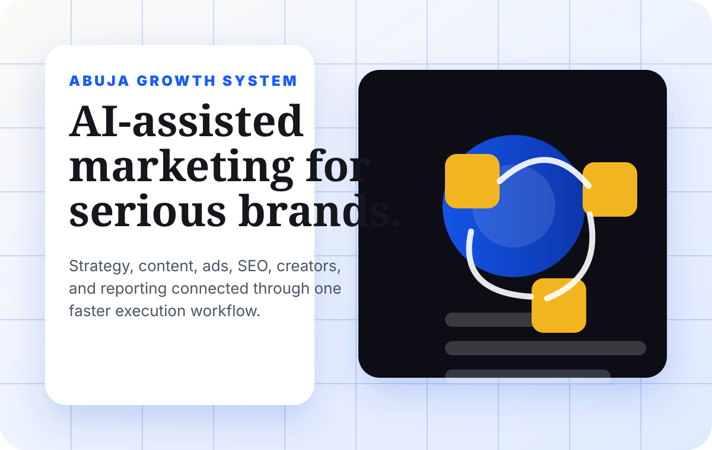

WTB insights
Practical marketing articles for Nigerian brands that want to be found and chosen.
Written by the WTB team for founders, SMEs, ecommerce brands, creators, and service businesses in Lagos, Abuja, and across Nigeria.
Google Ads vs Meta Ads in Nigeria in 2026: Which Should Your Business Start With?
A practical ad-budget guide for Nigerian brands choosing between search demand capture and social demand creation.
Read guide Visual discoveryHow Visual Search Is Changing Ecommerce Marketing in Nigeria
A sharp guide for ecommerce brands that want better discovery, stronger product visuals, and more mobile-first trust.
Read guide Trending AI workflowHow Nigerian Businesses Can Use WhatsApp AI to Qualify Leads and Close Sales Faster
A timely guide for brands that want better replies, cleaner qualification, and more sales from WhatsApp conversations.
Read guide Ranking diagnosisWhy Your Website Is Not Ranking on Google in Nigeria in 2026
A direct breakdown of the page, trust, local SEO, and technical issues stopping Nigerian websites from showing up properly.
Read guide SEO hiring guideHow to Hire an SEO Expert in Lagos or Abuja Without Wasting Money
A buyer-intent guide for businesses comparing SEO support, pricing, deliverables, and warning signs.
Read guide Website pricingHow Much Does Website Design Cost in Nigeria in 2026?
A clear breakdown of what affects website pricing, from basic pages to ecommerce, SEO, and custom domain setup.
Read guide SEO pricingSEO Pricing in Nigeria: How Much Should a Serious Business Budget?
A practical pricing guide for SEO audit, monthly SEO, content, local SEO, and competitive search work.
Read guide Social media pricingHow Much Do Social Media Managers Charge in Nigeria?
A guide for brands comparing social media management, content creation, paid ads, and campaign reporting.
Read guide
Service guideAI Marketing Agency in Abuja: Strategy, Content, Ads, SEO, and Reporting
A focused service page for Abuja brands comparing AI-assisted marketing support and execution systems.
View pageNeed help now?
Turn the article into an action plan for your business.
Send your website, business goal, location, and budget. We will recommend the next practical SEO or marketing step.